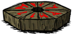

| Wooden Thing | |
|  |
|
| Renewable? | Can't be destroyed |
| Common Biomes | Chess |
| DebugSpawn | "teleportato_base" "teleportato_checkmate" (completed) |
| “ | My beautiful machine is in pieces! | ” |
| –Maxwell | ||
Wooden Thing overworld map icon
The Wooden Thing, (Commonly referred as the Teleportato when completed) is a special object. It is guarded by Clockwork Monsters and some Evil Flowers. Once combined with all of the other Things in any order, it can then be activated, allowing the player to journey to the next world. The components will spawn on different parts of the map, sometimes at complete opposite ends. When activated, dark, demonic hands will emerge from the ground, and grab the player, dragging the character into the earth.
The player can take their current inventory, including backpacks, in Sandbox Mode. However, when playing Adventure Mode players can only take 4 items. Eye Bone and Divining Rod can't be put inside the Adventure Teleportato, and if taken through in Sandbox Mode, they will turn into Ash. In both modes the player retains already unlocked crafting recipes.
The player will gain Experience based on the days survived, potentially unlocking new Characters. They will also be able to switch to a different Character for the next world, except in Adventure Mode.
| Teleportato Pieces | |
| Things | Crank Thing • Box Thing • Wooden Thing • Ring Thing • Metal Potato Thing |
| Naturally spawning world objects | |
| Plants | Berry Bush • Carrot • Cave Banana Tree • Cave Lichen • Flower (Evil Flower, Fern) • Grass • Light Flower • Lureplant • Mandrake • Mushrooms • Mushtree • Plant • Reeds • Sapling • Spiky Bush • Tree • Totally Normal Tree |
| Mobs and Mob Housing | Beehive • Hound Mound • Pond • Pig Fortress • Pig House • Pig King • Pig Torch • Rabbit Hutch • Rundown House • Slurtle Mound • Spider Den • Spilagmite • Splumonkey Pod • Tallbird Nest • Walrus Camp • Worm Hole |
| Inanimate | Ancient Pseudoscience Station • Ancient Statue • Basalt • Boulder • Gramaphone • Grave • Harp Statue • Headstone • Suspicious Dirt Pile • Marble Pillar • Marble Tree • Maxwell's Door • Maxwell Statue • Maxwell's Light • Merm Head • Nightmare Light • Nightmare Lock • Nightmare Throne • Obelisk • Ornate Chest • Pig Head • Pillars • Relic • Sinkhole • Skeleton • Stalagmite • Touch Stone • Thulecite Wall |
| Things | Box Thing • Crank Thing • Eye Bone • Metal Potato Thing • Ring Thing • Wooden Thing |


{kind=link}